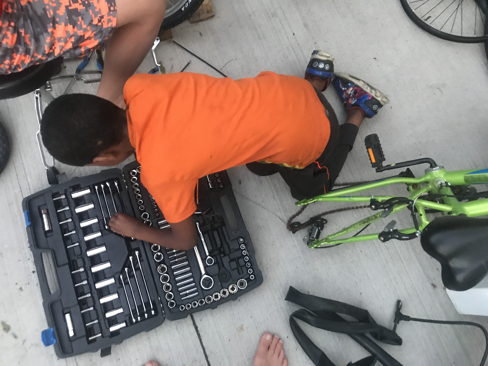
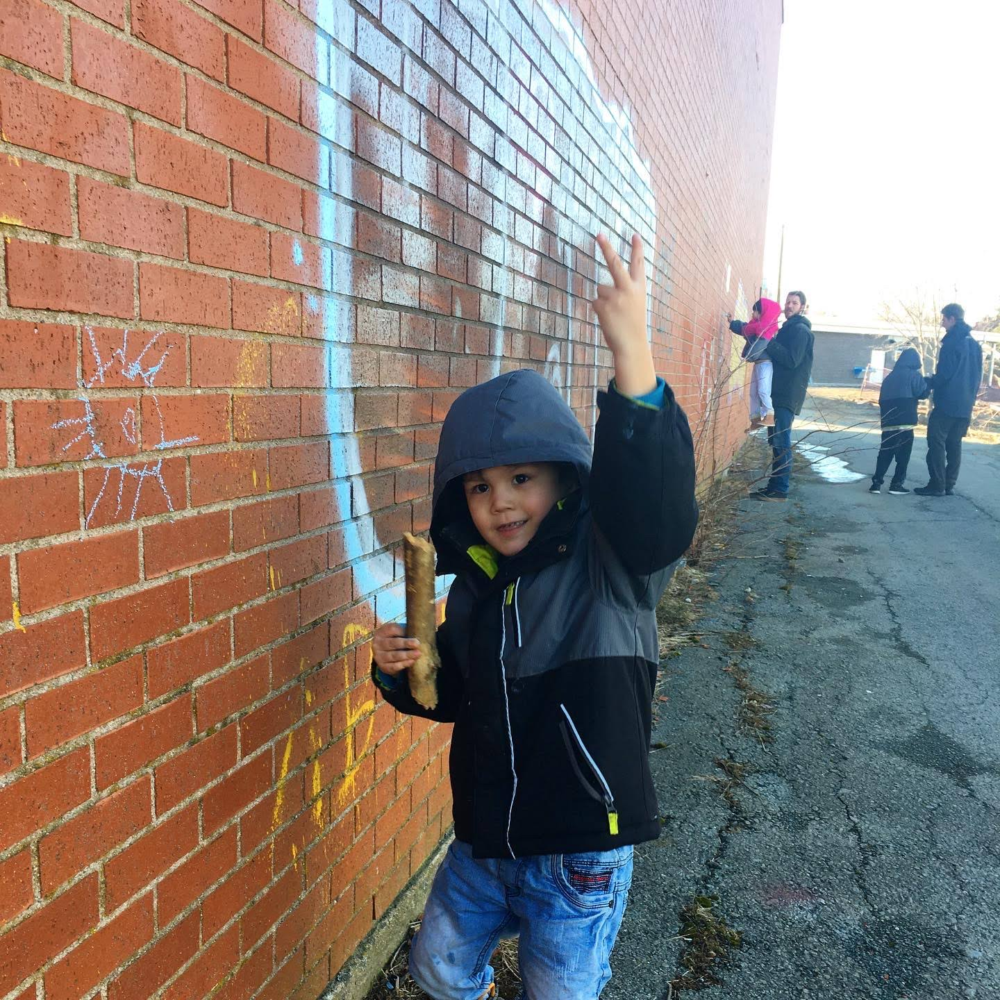
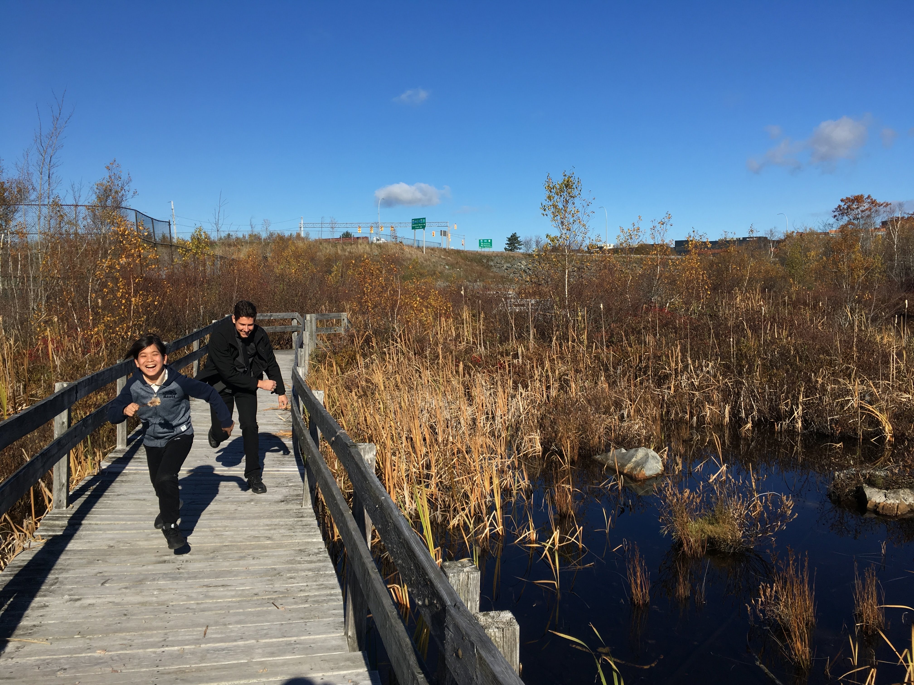
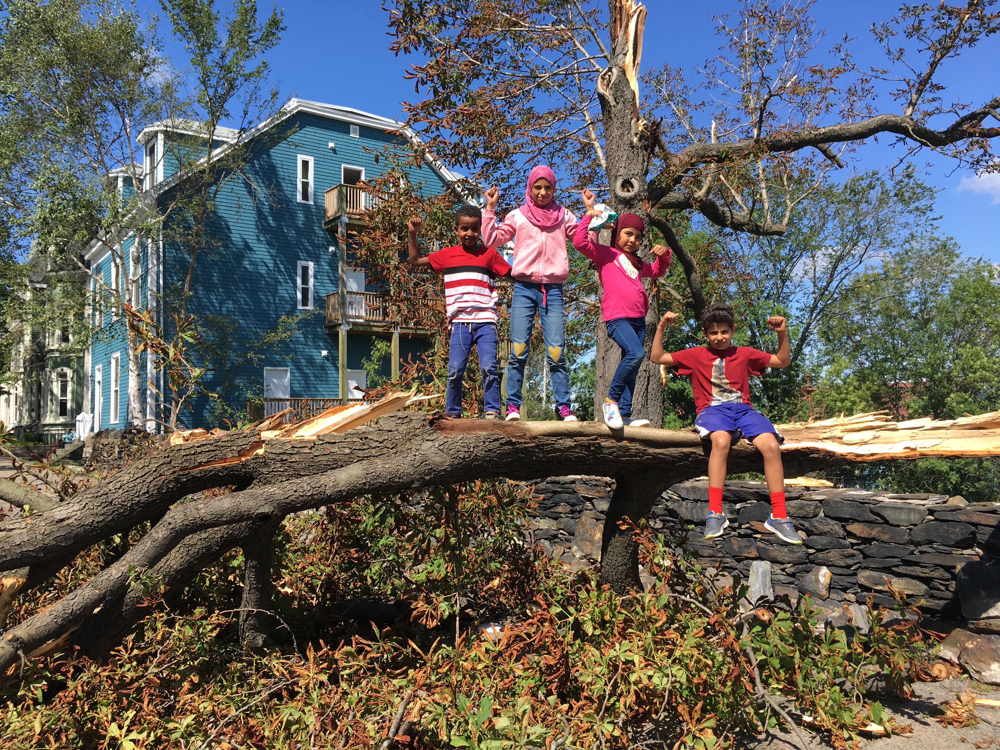
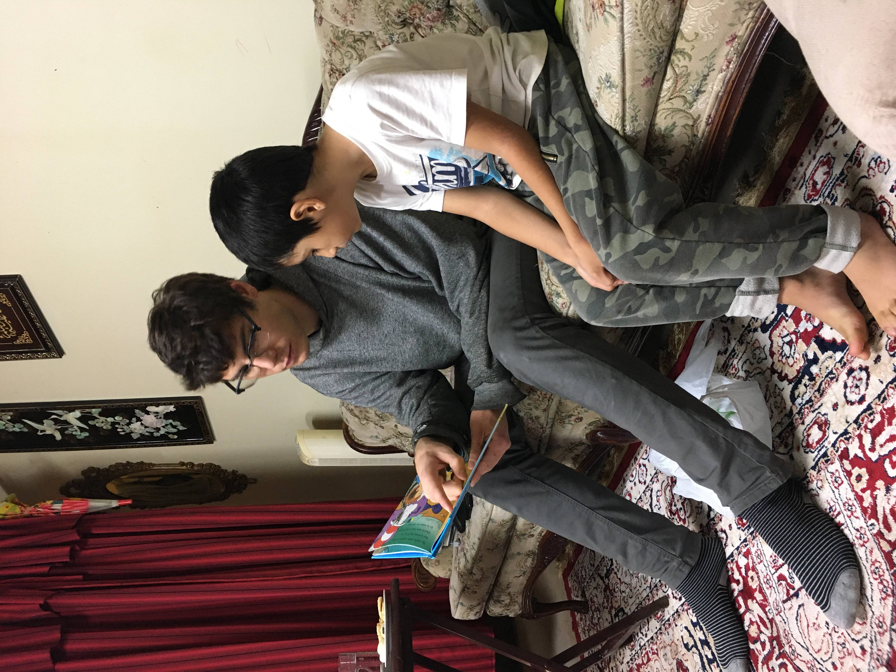

Community Peace Projects
- Youth-Led Bicycle Co-op
- Peer-Learning Literacy and Tutoring
- Neighbourhood Development Advocacy
- Housing Advocacy
- Youth-led Racial Justice and Reconciliation
When Covid19 hit and youth needed safe exercise and transportation, newcomer youth around Uniacke/Brunswick started a neighbourhood bicycle co-op to help the neighbourhood have access to bicycles and learn how to fix and maintain their own bikes. Led by our chief mechanic Mohammad Aljenadi, in the first year over 100 bicycles have been rescued from the trash and are repaired, used, and shared by kids and youth in the North End.
Newcomer children in the North End have particular barriers to literacy and the collective supports each other in relational one-to-one reading tutoring and homework support.
o With increasing automobile traffic posing real threat to kids crossing Uniacke St, residents Debbie and Mostafa took action to organize neighbours, collecting signatures and petitioning the city to slow down the traffic, which resulted in a decrease of the speed limit in the neighbourhood.
The collective has supported the organizing and advocacy of residents in First Nations housing in seeking housing reform in the city as well as residents in large apartment complexes who have been served unjust evictions and were denied heat in their units over the winter.
o Sarah Nyazungu is facilitating the initiative with a cohort of youth and young adults in the neighbourhood to challenge the realities they face around systemic oppression and work towards reconciliation, to build self confidence and resilience, to discuss and heal from topics surrounding racism and discrimination, and to empower participants to have a voice to speak about their own experiences of racism and discrimination through creative mediums.
